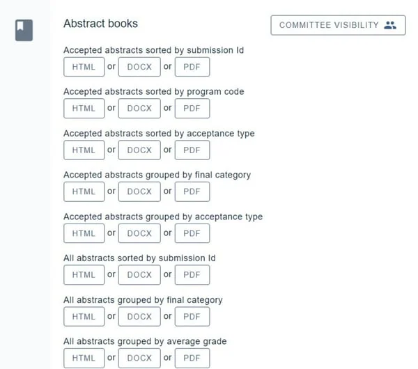
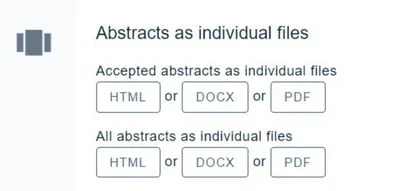
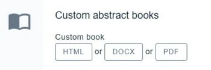

Abstract books
For event organisersNot an organiser?
You can easily create a range of abstract books, which include the responses to various fields from the abstract submission form.#
Go to Event dashboard → Abstract Management → Reports & Downloads
Skip to
Downloading individual submissions in a .zip file
The abstract book options will be displayed. Choose an html, Word doc or PDF file and click the appropriate button.

To determine the data that will appear in the abstract books, please go to Question tags.
Downloading individual submissions in a .zip file
Below is the choice of standard abstract books, you have the option to download all submissions individually.

Custom abstract books
Contact Oxford Abstractsif you would like a customised report containing data from your event.
We can create custom reports, spreadsheets and abstract books containing any fields you wish, if the standard options don't meet your requirements.
NB: Although the options for custom abstract books are extensive, they do not cover every custom requirement.
Once these have been created, they will appear in the Custom abstract books section. They are live updated so you can make any changes to your event's data and the changes will be reflected in the abstract books.

Common questions#
I need a report or an abstract book that you don’t seem to offer in your default options.#
Firstly, check all the options available here: Creating exports, reports and abstract books. If you can't see what you need, contact support@oxfordabstracts.com and we will try our best to supply you with what you require.
How do I edit the fields I want to appear in the abstract book?#
See Abstract books.
Didn't solve it? Ask our support team
No question is too small, and there's no charge for asking. Raise a ticket and someone who knows the software will pick it up.
Did this page solve it?
Thanks — this helps us fix it.